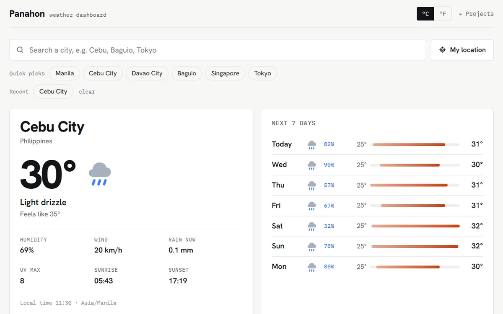
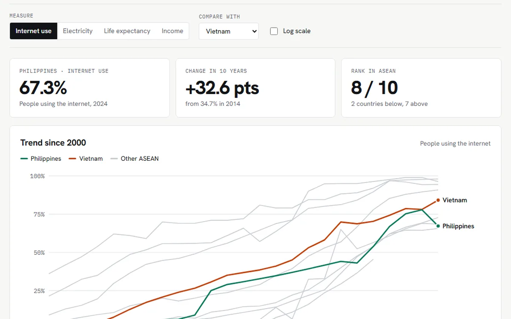

projectsmini · live
Small builds
Short projects I build to practice one skill at a time: APIs, databases, login, and AI. Every one is live and its code is public.

01 · API · Nov 2026
Panahon Weather
A weather dashboard for any city, built on the free Open-Meteo API.
- City search with autocomplete, keyboard support, recent searches and "my location".
- Hand-drawn SVG charts for hourly temperature and rain, with tooltips and a table view.
- Loading skeletons, error messages with retry, °C/°F, and shareable links.
JavaScriptREST APISVG chartsResponsive

02 · Data · Nov 2026
ASEAN in Numbers
How the Philippines compares with its 9 neighbors, using live World Bank data.
- Cleans the raw data: missing years stay as gaps, and rankings use each country's latest real year.
- Four measures, any comparison country, ASEAN median, and a log scale for income.
- Shows its own data quality: rows fetched, missing values, and the biggest one-year jump.
Data cleaningWorld Bank APISVG chartsJavaScript